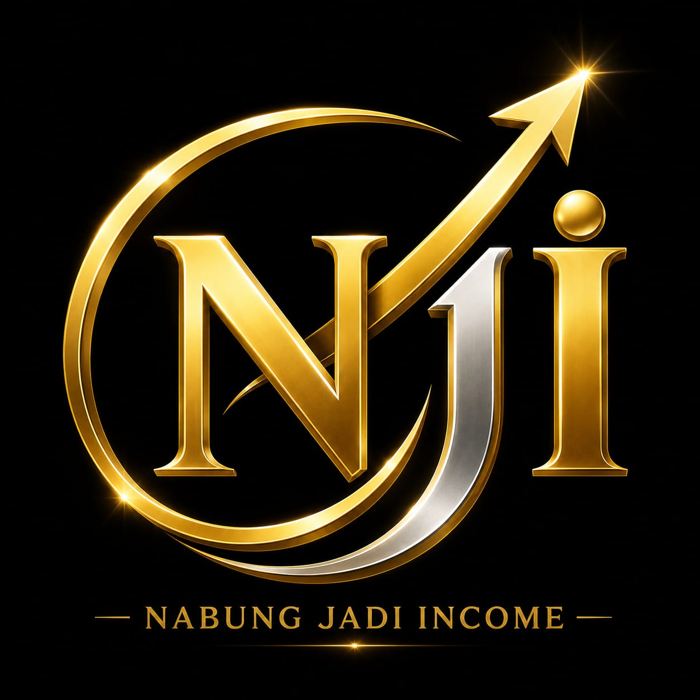
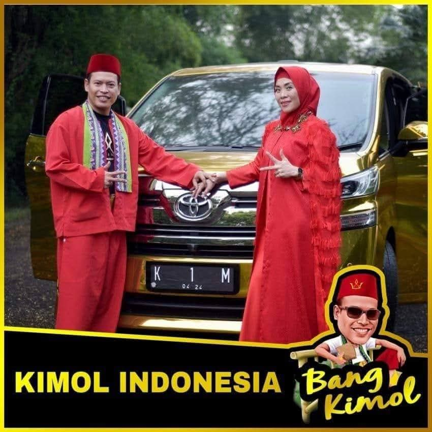

UNTUK ANDA YANG PERNAH LELAH BERJUANG DI BISNIS JARINGAN... IZINKAN KAMI BERCERITA SEBENTAR... ☕
Kalau Anda sudah lama di dunia asuransi, MLM, atau network marketing, pasti hafal siklus ini.
Awal join, semangat luar biasa!
Bikin daftar nama.
Hubungi teman sekolah, saudara, sampai tetangga.
Prospek door-to-door.
Kepanasan di jalan, kehujanan cari alamat.
Traktir ngopi prospek, keluar uang bensin.
Datang ke Home Meeting atau BOP sampai larut malam.
Ninggalin keluarga di rumah.
Semangat memang masih ada...
Tapi pelan-pelan, daftar nama di HP mulai habis.
Tawarin ke teman, malah sering dijauhi.
Presentasi berbusa-busa, ujung-ujungnya dijawab: "Nanti ya, tanya istri dulu."
Yang paling menyedihkan bukan saat ditolaknya...
Tetapi saat mulai lelah, tenaga terkuras, lalu muncul kalimat yang sering kita dengar:
"Mungkin saya memang nggak berbakat di bisnis ini."
"Mungkin saya nggak pinter ngomong."
Padahal...
Di usia saya yang sudah menginjak [TUA/DEWASA] tahun ini, saya belajar satu hal penting.
Masalahnya BUKAN pada diri Anda.
Masalahnya BUKAN pada kendaraan bisnisnya.
Tapi sering kali masalahnya... Anda masih memakai CARA LAMA di era yang sudah berubah!
Dulu orang mau diajak kumpul di hotel.
Sekarang orang lebih nyaman cari info lewat scroll HP di rumah.
Dulu orang harus dikejar-kejar.
Sekarang orang lebih suka baca Landing Page dan edukasi lewat WhatsApp.
Masa iya, dunia sudah serba canggih, kita masih mau kerja keras peras keringat seperti 10-20 tahun lalu? Apalagi untuk kita-kita yang usianya sudah tidak muda lagi. Tenaga fisik ada batasnya!
Itulah mengapa, saat saya membangun ekosistem NABUNG JADI INCOME (NJI), yang pertama kali saya buat BUKAN sekadar janji muluk-muluk.
Tetapi sebuah SISTEM.
Saya merancang sebuah Digital Support System di mana:
Fisik Anda boleh "nganggur" istirahat di rumah sambil ngopi, tapi aset digital Anda yang keliling internet mencari calon mitra!
Lalu apa kendaraan bisnisnya?
Tentu saja yang aman, diawasi OJK resmi, dan membawa berkah: 3iReborn bersinergi dengan Istikmal Syariah.
Kita bangun Passive Income bulanan (Aset Dunia), sekaligus kita kunci niat suci menuju Tanah Suci (Tabungan Umroh). Sesuai dengan prinsip saya: "Kejarlah Akherat, Insyaallah Dunia Kudapat." 🕋✨
Bisnis yang bertahan lama bukan hanya karena produknya bagus.
Tapi karena SISTEMNYA bisa diduplikasi oleh siapa saja, bahkan oleh mereka yang gaptek sekalipun.
Kalau Anda seorang pejuang keluarga yang mulai lelah mengejar prospek satu per satu...
Kalau Anda ingin membangun aset masa tua yang sejahtera dengan cara yang lebih cerdas dan elegan...
Mungkin yang Anda butuhkan bukan bisnis baru.
Tapi SISTEM BARU yang bekerja untuk Anda.
Mari kita diskusi. Sistemnya sudah saya siapkan.
Anda tinggal A.T.P (Amati, Tiru, Plek!)
Klik link di bawah ini untuk melihat bagaimana NJI Smart System bekerja, dan mari jadwalkan ngopi virtual bersama saya:
☕ JADWALKAN NGOPI VIRTUALSiapa tahu, ini adalah jawaban dari doa-doa Anda selama ini. Salam sukses berkah berkarya! 🚀